正则表达式概念
正则表达式是对字符串操作的一种逻辑公式，就是对字符串的一种过滤
可以判断是否匹配给定的格式
可以按指定格式从字符串中提取信息
re模块
findall方法
在字符串中找到正则表达式所匹配的所有子串，并返回一个列表，如果没有找到匹配的，则返回空列表
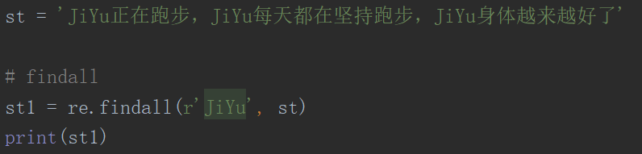
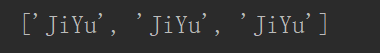
match方法
从字符串的起始位置匹配
匹配成功，返回的是一个匹配对象（这个对象包含了我们匹配的信息），如果不是起始位置匹配成功的话，match()返回的是空
只能匹配到一个 group() 提取匹配到的内容 span() 提取匹配到的字符下标
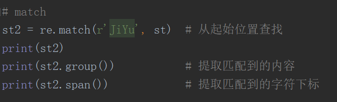
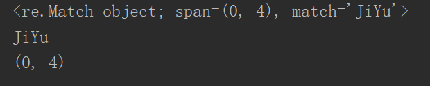
search方法
扫描整个字符串，匹配成功，返回的是一个匹配对象（这个对象包含了我们匹配的信息）
search也只能匹配到一个，找到符合规则的就返回，不会一直往后找
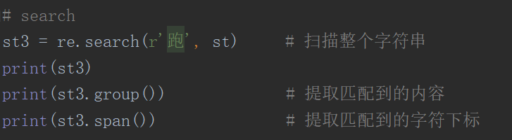
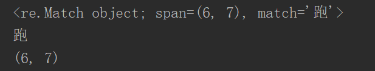
re.match 与 re.search的区别
re.match：从字符串的开始位置找，如果字符串开始不符合正则表达式，则匹配失败，返回空
re.search：匹配整个字符串，如果一直找不到则返回空
sub方法
把匹配到的所有字符串都替换，没找到就不进行操作，返回原字符串
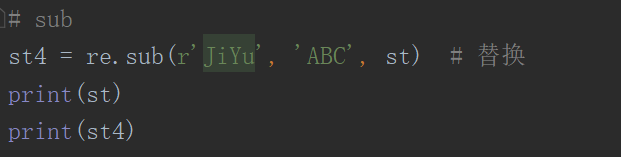
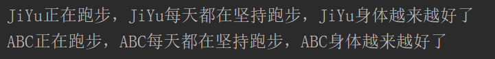
有一个参数为re.S，它表示 “.” 的作用扩展到整个字符串，包括“\n”
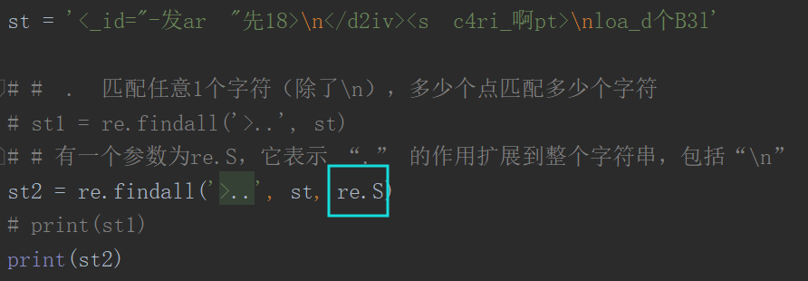
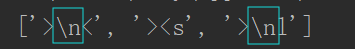
元字符
单字符匹配
. 匹配任意1个字符(除了\n ) [ ] 匹配[ ]中列举的字符
\d 匹配数字，即0-9 \D 匹配非数字,即不是数字
\s 匹配空白，即空格,tab键 \S 匹配非空白
\w 匹配单词字符,即a-z、A-Z、 0-9、_ \W 匹配非单词字符
代表数量的元字符
* 匹配前一个字符出现0次或者无限次,即可有可无
+ 匹配前一一个字符出现1次或者无限次，即至少有1次
? 匹配前一个字符出现1次或者0次,即要么有1次，要么没有
{m} 匹配前一个字符出现m次
{m,} 匹配前一个字符至少出现m次
{m,n} 匹配前一个字符出现从m到n次
表示边界的元字符
^ 匹配字符串开头
$ 匹配字符串结尾
\b 匹配一个单词的边界
\B 匹配非单词边界
分组匹配
| 匹配左右任意一个表达式
(ab) 将括号中字符作为一个分组
贪婪与非贪婪
正则默认都是用贪婪模式去匹配数据的，就是尽可能多的匹配符合要求的数据
在非贪婪模式下，始终找最短匹配
加个 ? 就是 非贪婪模式
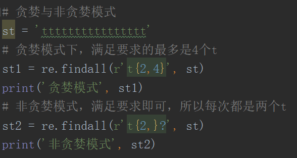
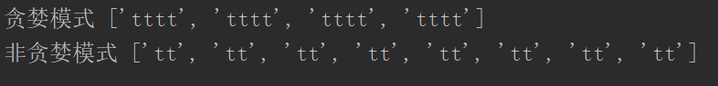